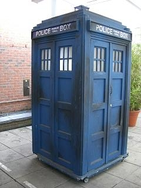

Read the Intro and Tips section at the bottom!
Task 1
Change the background color, of the div that contains this task, to the color in each box when the box is hovered over.
When the mouse stops hovering over the box, change the background color back to white.
Task 2
- First click: Move the Chrome icon to the bottom, left corner of the page.
- Second click: Move the Chrome icon back to it's original spot.
- Further clicks: Continue the cycle.
Task 3
Make the Tardis transparent to degree of the specified percentage.
Task 4
Take whatever is typed into the textfield and print it out into the webpage. The output must update immediately following every character entry.
When focus is taken away from the textfield, log the textfield contents to the console, and clear the textfield & the output from the page.
Task 5
On page load, print out the current hour, minute, and second.
If the second is evenly divisible by 5, also print "Break time!".
You'll probably find the reference on Date objects helpful.
Intro and Tips
Write the JavaScript (No jQuery or other libraries!) required to make the tasks work as required in each task description. Add any HTML/CSS that you consider necessary, but do not fundamentally alter the layout of the page. These are meant to be straight-forward exercises, intended to build up towards using JavaScript & events in more practical situations.
You may find documentation such as the Mozilla Developer Network (and the Event Reference List in particular) useful.
Remember some of the basic, such as manipulating style and listening for an event.
Changing the padding style of an element with the id demo:
// Here we query the document (i.e. the webpage) for the tag with id demo
// the_target is the variable name that will represent the result of our search, i.e. the tag that is found
var the_target = document.querySelector('#demo');
// The style keyword is always used.
// The particular CSS style in this case is padding, but any CSS style can be manipulated
the_target_style.style.padding = '20px';
Attaching an event to the id sample:
// Same idea as before, identify the tag that we want to work with
var my_sample = document.querySelector('#sample');
// Using the addEventListener method we bind a click event listener to the tag
// There are many event types... experiment with them!
my_sample.addEventListener('click', function() {
console.log('The element was clicked');
});
// Binding a mouseover event listener to the same element
// Using the this keyword we can refer to the element that is experiencing the event
// In this example, this is referring to my_sample because this is used
// inside the function that is run during the mouseover
// Thus the my_sample element will gain a border of 1px solid blue on mouseover
my_sample.addEventListener('mouseover', function() {
this.style.border = '1px solid blue';
});